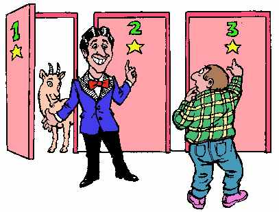
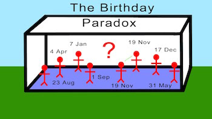

Exercise 7a - The Monty Hall Problem#

The Monty Hall Problem is a legendary example of how counter-intuitive simple probability can be. Here’s the situation:
Suppose you’re on a game show, and you’re given the choice of three doors: Behind one door is a car; behind the others, goats. You pick a door, say No. 1, and the host, who knows what’s behind the doors, opens another door, say No. 3, which has a goat. He then says to you, “Do you want to pick door No. 2?” Is it to your advantage to switch your choice?
Write a numeric simulation of the Monty Hall problem and calculate the probabilities of winning if you switch every time you play and if you stay every time you play.
Here’s some code to get you started
import random
import numpy as np
def play_monty_hall(strategy):
if strategy!="stay" and strategy!="switch":
return "Strategy must be 'stay' or 'switch'"
#put your simulation code here
#return 1 if the simulation led to a win (car) and a 0 if to a loss (goat)
num_games = 1000
wins_by_staying = [play_monty_hall('stay') for game in range(num_games)]
wins_by_switching = [play_monty_hall('switch') for game in range(num_games)]
print "When staying:", np.mean(wins_by_staying)
print "When switching:", np.mean(wins_by_switching)
Exercise 7b - The Birthday Paradox#
The birthday paradox refers to the fact that it takes surprisingly few people before you’re assured that some pair of people will have the same birthday.

Write code that finds a numerical approximation to the Birthday Paradox by simulating n people walking into a room.
Use your code to answer these questions
How many people does it take for the probability to reach 50%?#
Because you are writing a numerical approximation, you’ll want to run your simulations lots of times to get a distribution. Return the modal value of number of people that yield a 50% likelhood of a shared birthday.
Check your solutions#
Check that your code is returning correct values